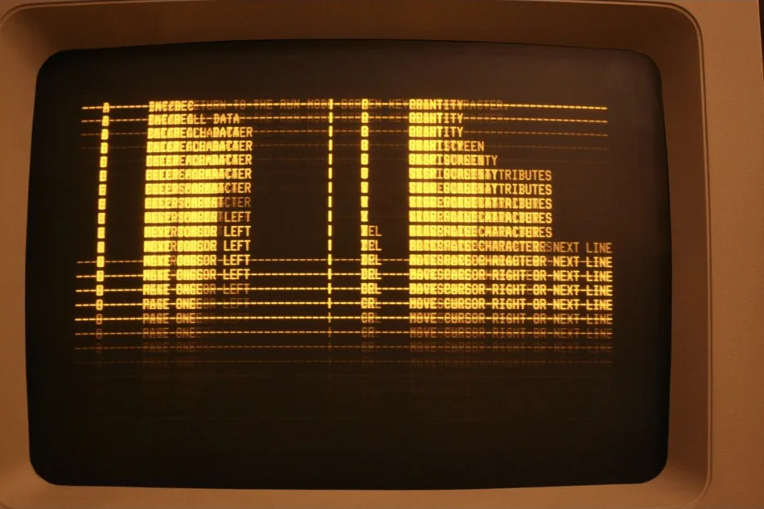

SYSTEM
NOTES
_
Original
BIOS
EDITORIAL
ATLAS
KNOWLEDGE
ARCHITECTURE
ATLAS
PALLAS
MERCURY
PATTERNS /
STRUCTURE /
CONNECT /
TRANSLATE /
DESIGN /
TEACH /

DISCOVERY MODE
01 / COMPARE
02 / CONNECT
03 / EXPERIMENT
04 / DECIDE
SYSTEM DIRECTORY
THE ARCHITECTURE OF KNOWLEDGE
PATTERN RECOGNITION
[ BACK TO EDITORIAL ]
Open in Original